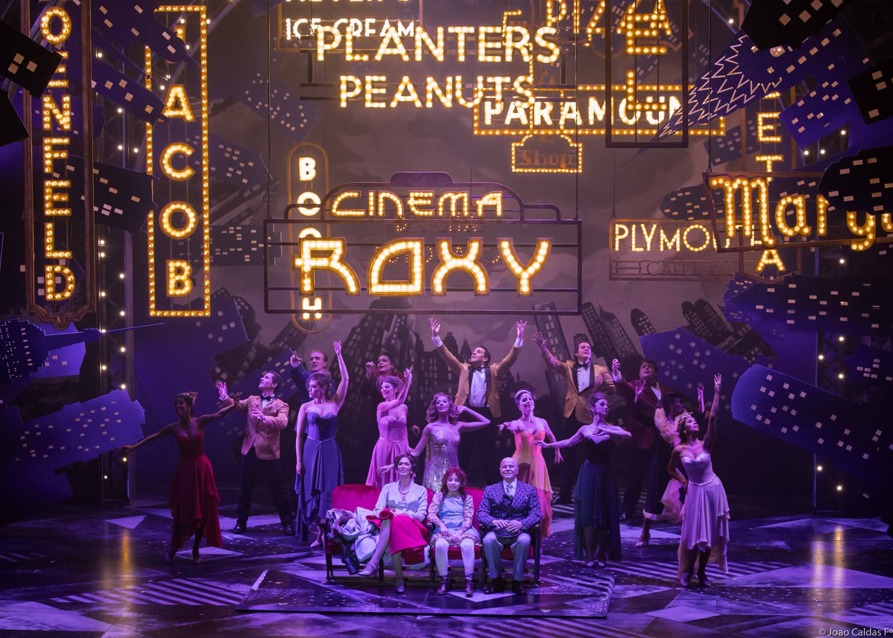

Natural de São Paulo, a atriz e empreendedora cultural trabalha há mais de dez anos nos maiores musicais do Brasil e do mundo. Por seu talento, a artista é reconhecida por integrar o elenco de grandes franquias da Broadway, passando por renomadas produtoras como T4F e Atelier de Cultura. Entre seus principais trabalhos estão A Família Addams, Wicked, como cover de Elphaba, Les Misérables, Annie, brilhando como Star-to-Be, e Escola do Rock, como cover de Rosalie Mullins e Patty DiMarco.
Born in São Paulo, the actress and entertainment executive has been working in the world’s most famous musicals for over ten years. For her talent, the artist is recognized for being cast in major Broadway franchises and working alongside highly esteemed producers such as T4F and Atelier de Cultura. Her resumé includes The Addams Family, Wicked, where she covered the role of Elphaba, Les Misérables, Annie, shining as Star-to-Be, and School of Rock, covering for Rosalie Mullins and Patty DiMarco.

Desde cedo, soube que seu destino era estar nos palcos, iniciando sua trajetória artística na Graded School of São Paulo. Ao longo dos anos, aprimorou sua técnica de performance com grandes mestres tais como Sara Sarres (BR), Mary Setrakian (NY), Fernanda Douglas (Liz Caplan Studios), Christian Fletcher (AMDA), David Brunetti, Lynn Wallis (RAD) e Christiane Matallo. Na dança, se formou em Ballet Clássico pela Royal Academy of Dance (RAD) na Lucianne Murta Escola de Ballet. Academicamente, obteve seu Mestrado em Liderança e Gestão de Empreendimentos Criativos na Northwestern University (Chicago) e seu Bacharel em Arquitetura e Urbanismo na FAAP (São Paulo).
From an early age, she knew her destiny was to be on stage, starting her artistic journey at Graded School of São Paulo. Over the years, she honed her performance technique with great mentors such as Sara Sarres (BR), Mary Setrakian (NY), Fernanda Douglas (Liz Caplan Studios), Christian Fletcher (AMDA), David Brunetti, Lynn Wallis (RAD) and Christiane Matallo. In dance, she graduated in Classical Ballet from the Royal Academy of Dance (RAD) at Lucianne Murta Ballet School. Academically, Roberta earned her Master’s in Leadership for Creative Enterprises from Northwestern University (Chicago) and her Bachelor’s in Architecture and Urban Design from FAAP (São Paulo).
Em 2021, produziu seu primeiro show Era Uma Vez, espetáculo musical que levou os contos de fadas ao palco do Teatro Bradesco. Nele, clássicas canções ganharam interpretações e arranjos inesquecíveis regidos pelo Maestro João Carlos Martins e acompanhados por sua Orchestra Bachiana Filarmônica. Por essa iniciativa, Jafet é considerada pioneira na retomada pós-pandêmica de espetáculos no Brasil.
In 2021, Roberta produced her first show Once Upon a Time, a musical spectacle that brought an enchanted fairy tale world to the Bradesco Theater. Here, classic songs received unforgettable renditions and arrangements conducted by Maestro João Carlos Martins and accompanied by his Bachian Philharmonic Orchestra. Thanks to this initiative, she is considered a pioneer in the live entertainment post-pandemic comeback in Brazil.
Atualmente, mora nos Estados Unidos e lidera sua produtora cultural Rosa Entertainment em conjunto com sua sócia, Sara Sarres.
Currently, Roberta resides in the United States and leads her entertainment production company Rosa Entertainment alongside Sara Sarres.
Explore the roles, productions and worlds that shaped her journey.
Percorra os papéis, as produções e os mundos que formaram sua trajetória.